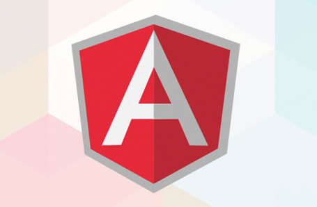
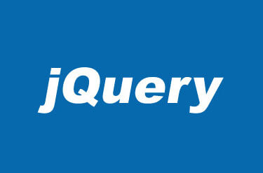
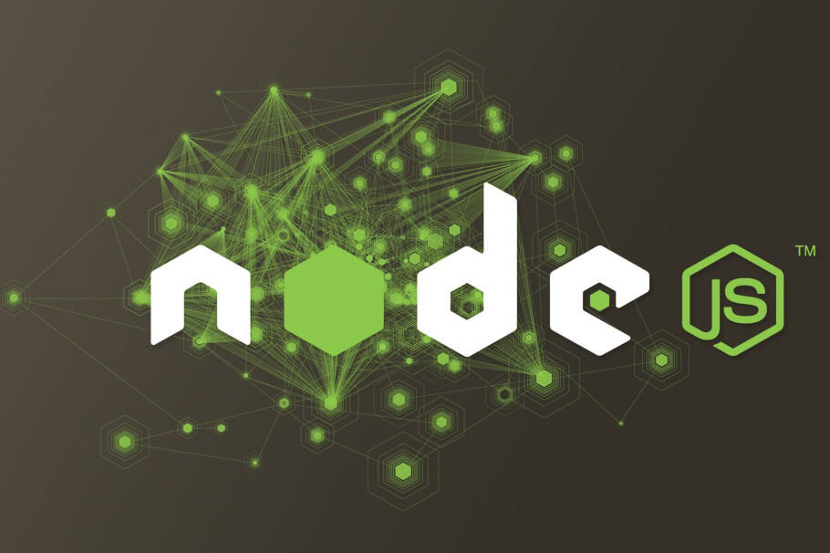

WebWang
Hi，Welcome！
进入后院
前端开发
前端资源
开源项目
网址导航
关于
开源项目
Open Source

Angular
AngularJS是为了克服HTML在构建应用上的不足而设计的。HTML是一门很好的为静态文本展示设计的声明式语言，但要构建WEB应用的话它就显得乏力了。所以我做了一些工作（你也可以觉得是小花招）来让浏览器做我想要的事。
React
由于 React 的设计思想极其独特，属于革命性创新，性能出众，代码逻辑却非常简单。所以，越来越多的人开始关注和使用，认为它可能是将来 Web 开发的主流工具。
Bootstrap
它由Twitter的设计师Mark Otto和Jacob Thornton合作开发，是一个CSS/HTML框架。Bootstrap提供了优雅的HTML和CSS规范，它即是由动态CSS语言Less写成。简洁、直观、强悍的前端开发框架，让web开发更迅速、简单。

Jquery
JQuery是继prototype之后又一个优秀的Javascript库。它是轻量级的js库 ，它兼容CSS3，还兼容各种浏览器。

NodeJS
Node.js是一个基于Chrome JavaScript运行时建立的平台， 用于方便地搭建响应速度快、易于扩展的网络应用。Node.js 使用事件驱动， 非阻塞I/O 模型而得以轻量和高效，非常适合在分布式设备上运行数据密集型的实时应用。
更多开源项目更新中...
 Hi，Welcome！
Hi，Welcome！